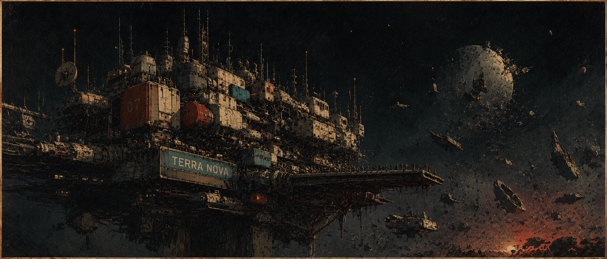
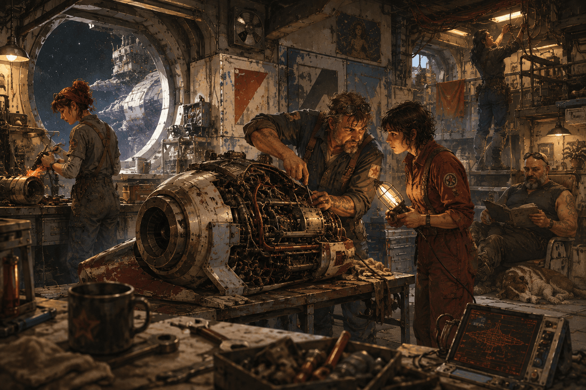
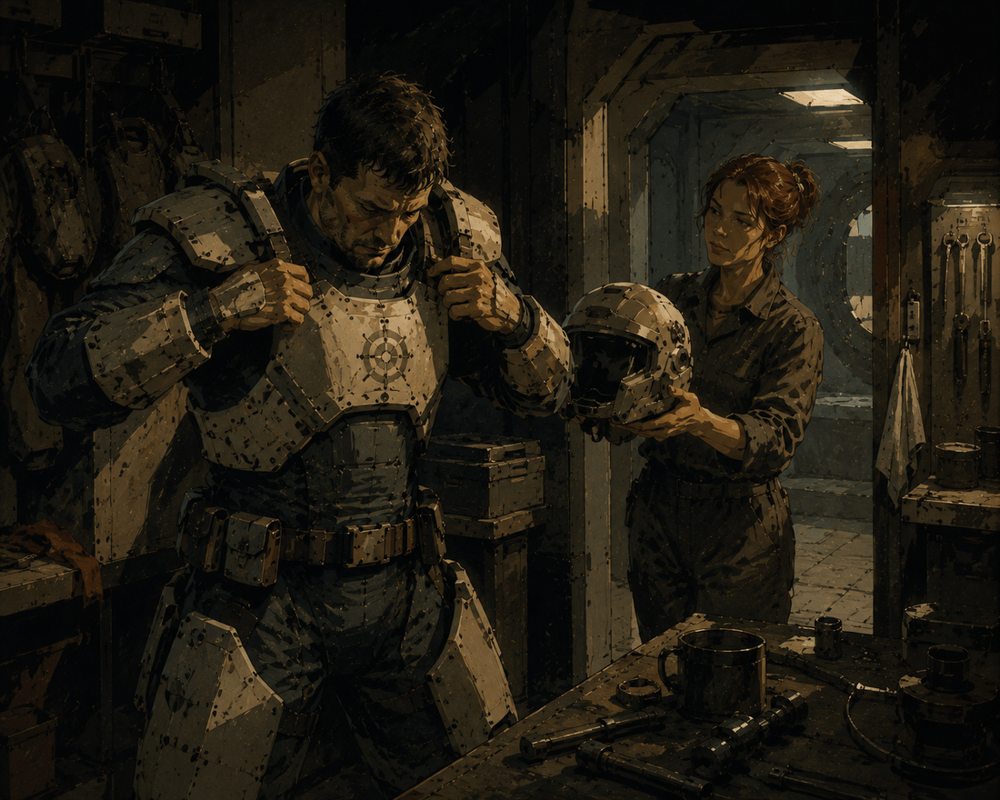
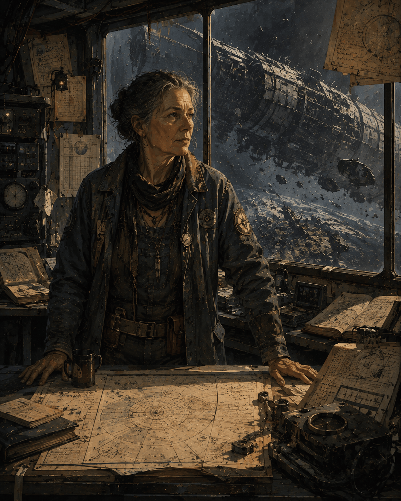

02 / 06 · Überlebende · Terra Nova
Terraner
Was übrig blieb, wurde zur Heimat zusammengeschweißt.
Übersicht
Einst waren sie stolz. Hochtechnologisiert, das Ursprungsvolk der Erde selbst. Dann kam die Zerstörung (0 n.Z.), und mit ihr verschwand jeder zentrale Ort, an dem sich so etwas wie „Menschheit" hätte organisieren können. Ein paar Jahrzehnte lang existierte sie als politischer Akteur schlicht nicht mehr — nur noch überlebende Individuen, verstreute Kleingruppen, jeder für sich.
Irgendwann kehrte eine Gruppe Überlebender zurück zu den Trümmerfeldern der Erde — vor allem ehemalige Techniker, Ingenieure, Militärpersonal. Was sie vorfanden, war Schrott. Aus notdürftig zusammengeschweißten Wrackteilen wurde über Jahrzehnte trotzdem eine wachsende Station: Terra Nova. Der Name Terraner setzte sich als Selbstbezeichnung durch, ein bewusster Anspruch auf Kontinuität — wir sind noch da, sagt er im Grunde. Gründungsfigur war der Ingenieur Albertross.
Politischer Status
Aktiv gekämpft haben die Terraner während der Lykaner-Rebellion nicht — dafür fehlten schlicht Mittel und Militär. Einzelne von ihnen unterstützten die Rebellion trotzdem, mit Informationen, mit Schmuggel, mit medizinischer Hilfe. Und dann, nach der Niederschlagung der Rebellion und der Dominat-Reform, passierte etwas Überraschendes: Die Terraner bekamen einen Sitz. Offiziell als Anerkennung verkauft. Tatsächlich eher eine kalkulierte Geste des Imperators — symbolisch bedeutsam, machtpolitisch aber vollkommen ungefährlich.
Von den anderen Völkern wird man weitgehend als schwach angesehen. Und ehrlich gesagt: nicht ganz zu Unrecht, aus deren Sicht. Die Menschen haben schließlich ihre eigene Welt zerstört — und den ersten Krieg gegen die Nyxaren obendrein verloren.
Spannungsfeld
Hier liegt das eigentliche Problem: Der Sitz wurde nicht erkämpft, sondern gewährt — und ausgerechnet einer Gruppe, die zum Zeitpunkt der Rebellion kaum eine tragende Rolle gespielt hatte. Wer wirklich an vorderster Front stand, andere Menschen, sieht sich um die Früchte des eigenen Einsatzes gebracht. Bitter, aber nachvollziehbar.
Denn eines sollte man nicht vergessen: Nicht alle Menschen sind Terraner. Die meisten leben weiterhin verstreut, auf fremden Planeten und Schiffen, ohne eigenes Territorium — oft als Bürger zweiter Klasse, manche noch immer in offener oder gut verschleierter Sklaverei, gerade auf den Blutfarmen der Nyxaren.
Der Große Plan — Glaube ohne Religion
Wo andere Völker Religion haben, haben die Terraner etwas anderes — diesseitiger, fast ingenieursmäßig gedacht: Eines Tages wird die Menschheit einen neuen Planeten finden, ihn besiedeln, und diesmal, diesmal wirklich, aus der Geschichte gelernt haben. Kein „wenn". Ein „wann". Keine Erlösung durch Glauben, sondern ein Ergebnis, das man sich hart erarbeitet — durch Arbeit, durch Disziplin, durch schieres Durchhalten.
Kein Enddatum steht fest, kein Zielplanet ist vorherbestimmt. Der Plan ist eine Richtung, keine Koordinate — das ist wichtig. Die gesammelten Erd-Artefakte werden entsprechend doppelt gelesen: nicht bloß als Museumsstücke, sondern als Wissensarchiv für die nächste Kolonie, wo auch immer die am Ende liegen mag.
Alltag & Gesellschaft

Terra Nova ist gewachsen, nicht geplant — ein Konglomerat aus zusammengeschweißten Schiffswracks und improvisierten Anbauten. Organisch, ohne Zentralbau, ohne Symmetrie. Das genaue Gegenteil der kalten Kathedralen-Ästhetik der Nyxaren, könnte man sagen. Und egal, welche Herkunft, welche Fraktion: Handwerk und Improvisationsgeschick gelten hier als Statusmerkmal, Punkt.
Politisch wählt Terra Nova seinen Kapitänsrat — und politische Debatte gehört zum Alltag wie das Essen, allgegenwärtig, laut, oft ergebnislos, aber nie langweilig. Die Partnerwahl ist frei, arrangierte Ehen gibt es nicht. Gemeinschaftliche Kindererziehung spielt dagegen eine größere Rolle als reine Kleinfamilien — schon aus reinem Platz- und Ressourcenmangel.
Militär

Ein stehendes Heer wie die Nyxaren-Blutgarde? Fehlanzeige. Die Terraner sind militärisch das schwächste Vollmitglied des Dominat — und wissen das auch selbst, ganz genau. Was sie stattdessen haben: eine kleine, aber gut ausgebildete Flotte, die auf Cleverness, Improvisation und Ortskenntnis setzt, weil Masse und Feuerkraft einfach nicht drin sind.
Die zentrale Doktrin lässt sich in einem Satz zusammenfassen: kein Schiff verlieren, das man sich nicht leisten kann zu verlieren. Ersatz gibt es schließlich keinen. Die Schiffsklassen tragen entsprechend bodenständige, generische Namen — Fregatten, Kreuzer, Schoner, Zerstörer, keine pompösen Einzeltitel. Gerade für die kleinen, flexiblen Aufgaben des Agenten-Programms erweist sich diese Flotte als überraschend wertvoll.
Sprache
Direkt. Unprätentiös. Technisch geprägt, durchzogen von einem nautischen Bildfeld, das an jeder Ecke durchscheint — der bewusste Gegenentwurf zur blumig-religiösen Sprache der Nyxaren. Man hört es an festen Redewendungen wie „Kurs halten“, „vor Anker gehen“, „dem Plan dienen“, „Leck schlagen“, „an Deck kommen“ oder „Lotsendienst tun“.
Vornamen bilden einen bewussten Flickenteppich vieler irdischer Kulturen — kein einheitliches Schema, eher ein Spiegel der alten Erde. Nachnamen dagegen stammen oft aus Berufs- oder Funktionsbezeichnungen, die irgendwann zu erblichen Familiennamen wurden: Steuermann, Lotse, Schmidt.
Fraktionen
Ohne Religion als einigendes Band bricht sich der zentrale Konflikt der Terraner ganz direkt politisch Bahn: Bewahrung des Erbes — oder Ausrichtung auf eine neue Zukunft? Drei lose politische Lager ringen um die Antwort, keine starren Parteien, eher Strömungen.
Ankerwacht
Bewahrung des Erbes der alten Erde, isolationistisch, misstrauisch gegenüber dem Dominat.
- Wachsamer Blick — Bonus auf Wahrnehmung bei Bedrohungen.
- Alte Disziplin — Resistenz gegen Täuschung.
Steuerleute
Zukunftsgewandt, aktiver Ausbau der galaktischen Position, Bündnispolitik.
- Verhandlungsgeschick — Bonus auf Überzeugung im diplomatischen Kontext.
- Legitimitätsanspruch — kann sich einmal pro Sitzung glaubhaft als offizieller Vertreter ausweisen.
Lotsen
Pragmatische, gewählte Vermittler — stellen aktuell die Führung.
- Ortskenntnis der Diaspora — kennt eher Kontakte unter verstreuten Menschen.
- Improvisationstalent — Bonus auf Technik bei behelfsmäßigen Reparaturen.
Schlüsselfiguren

Albertross, der Gründer, war Ingenieur — historisch vermutlich eine ziemlich unspektakuläre Person, über die Jahrzehnte hinweg aber zur fast legendären Gestalt verklärt. Nie religiös verehrt, wohlgemerkt, dafür war er zu nüchtern, zu sturköpfig, zu pragmatisch. Als geistiger Urheber des Großen Plans gilt er trotzdem, bis heute. Kein Wunder, dass sich Ankerwacht und Steuerleute beide auf ihn berufen — nur eben mit völlig gegensätzlicher Lesart.
Marlene Steuermann trägt den Titel der Admiralität, die Vorsitzende des Kapitänsrats — aktuell, Stand ~340 n.Z., getragen von den Lotsen. Ihr Ziel: den Terraner-Sitz im Dominat von einer bloß geduldeten Alibi-Position zu echtem Einfluss auszubauen. Klingt vernünftig, findet aber nicht jeder. Die Ankerwacht widersetzt sich erbittert — für sie ist jede Vertiefung der Dominat-Bindung nichts anderes als Verrat am Gedächtnis der Erde.
Blick nach außen
Nyxaren: der natürliche Feind — verantwortlich für die Zerstörung der Erde, und bis heute für die andauernde Versklavung vieler Menschen. Lykaner: am ehesten Sympathie, fast so etwas wie Identifikation. Orks: kompliziert, emotional aufgeladen — aus menschlichem Genpol geschaffen, fühlen sie sich für viele Terraner fast wie verlorene Geschwister an.
Aeldir: Faszination statt Gleichgültigkeit. Ein attraktiver potenzieller Partner, wenn es um technologischen Aufschluss geht. Prometheaner dagegen bleiben besonders heikel — direkt mitverantwortlich für die menschliche Niederlage im Ursprungskrieg, und trotzdem, so bitter das klingt, eine aus Menschen hervorgegangene Fraktion, die heute weit mächtiger agiert als die Terraner selbst.